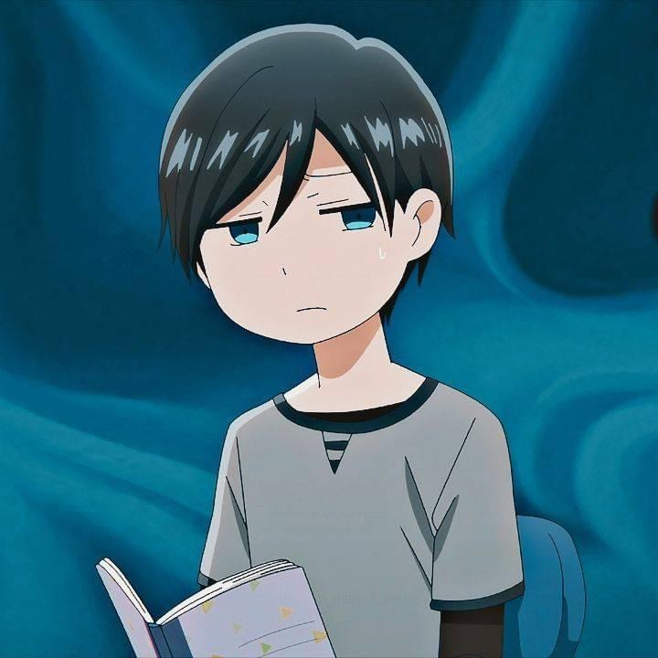
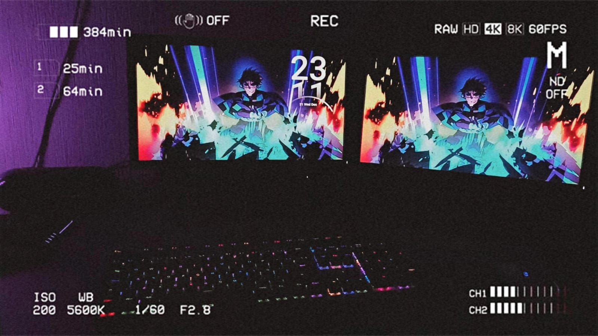

¿Quién soy? ¿Cómo me ven los demás?

Soy una persona muy risueña me gusta reír y disfrutar de momentos, me considero inteligente y muy analítico, sobre pienso demasiado las cosas y no me tengo a veces demasiada confianza, me gusta mucho el ajedrez y pues la tecnología además de la robótica, me gusta explorar todo y pues soy creativo y me gusta crear o arreglar cosas, no soy mucho de leer a menos que sean temas de mi interés, prefiero aprender de videos o de forma práctica, soy cariñoso y amable, no me gustan las mentiras y siempre estoy dispuesto a escuchar.
Pienso que eres una persona responsable, comprometida, con las metas que quieres lograr. Además de ser perfeccionista y algunas veces, dudas de tus capacidades. En lo emocional eres muy cariñoso y necesitas muchos abrazos para saber que eres amado.
Diego es una persona de confianza, sus vibras generan confianza y trasmite tranquilidad cuando estás con él, algunas de sus fortalezas son que es muy amable con las personas sin importar lo que haya pasado, es una persona con inteligencia social y es algo de admirar ya que muchas personas les cuesta tener este tipo de inteligencia, y sobre todo siempre está cuando sus amigos lo necesitan sin importar las circunstancias y es alguien a quien yo admiro y valoro muchísimo.
| FÍSICAS | EMOCIONALES | MENTALES | SOCIALES |
|---|---|---|---|
| Delgado | Tranquilo | Lógico | Empático |
| Alto | Optimista | Creativo | Cariñoso |
| Cabello negro | Alegre | Organizado mentalmente | Risueño |
| Tez blanca un poco morena | Sencible | Analítico | Serio |
| Aspecto ordenado | Comprensivo | Reflexivo | Educado |
En lo personal pienso que mis gustos y mi forma a veces de ser me hacen distinto, la música que escucho es distinta a la que a muchos les gusta, pues mis aficiones son algo distintas a las que la mayoría no le llama la atención, y pues también soy alguien algo tímido y no soy tanto a veces de socializar con las demás personas al conocerlas por primera vez, en si mis gustos y mi actitud me distinguen, no todos escuchan a los "Enanitos Verdes" mi banda favorita o les gusta el ajedrez y armar cosas o intentar crear cosas.
